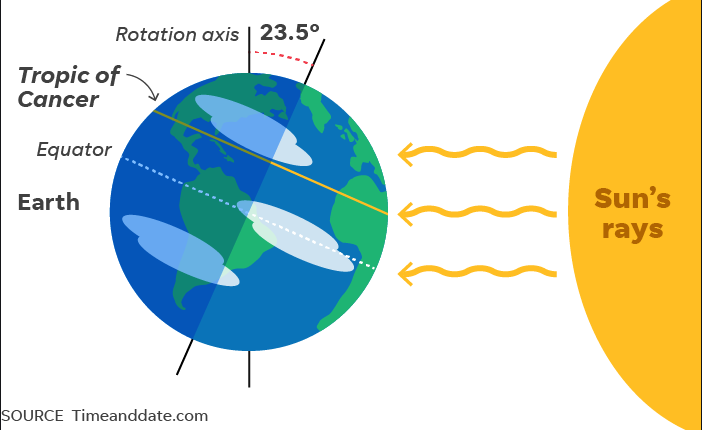
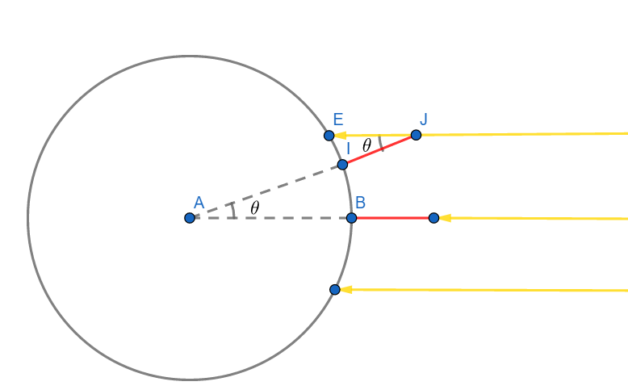
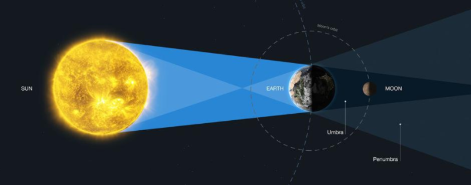
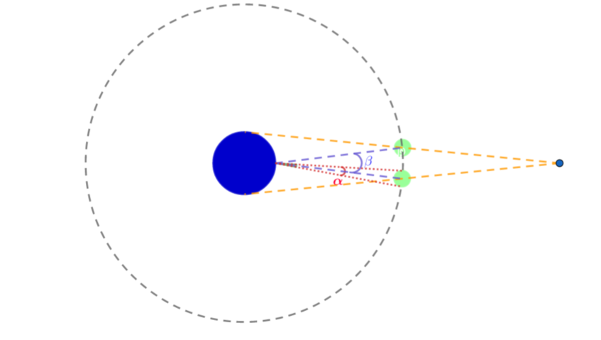
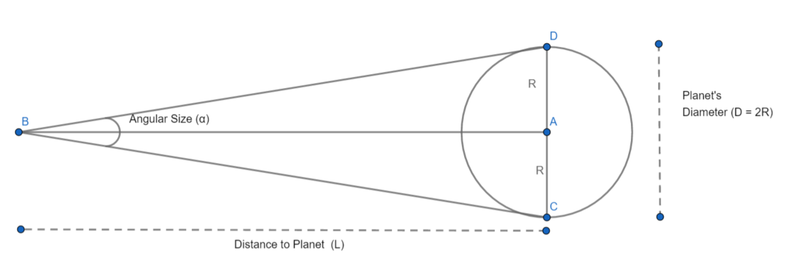
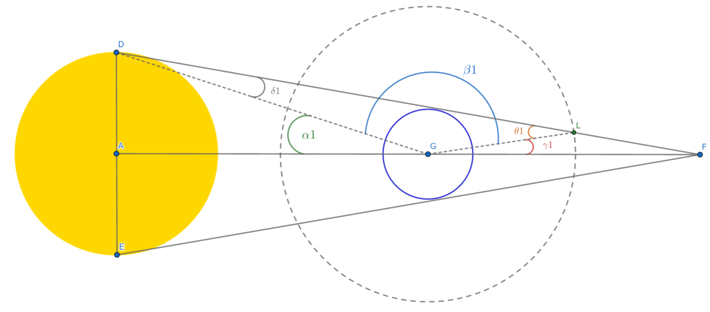
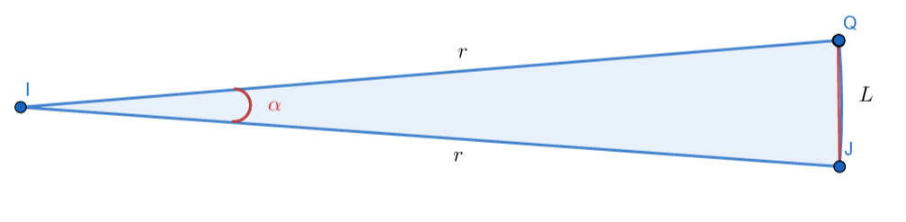
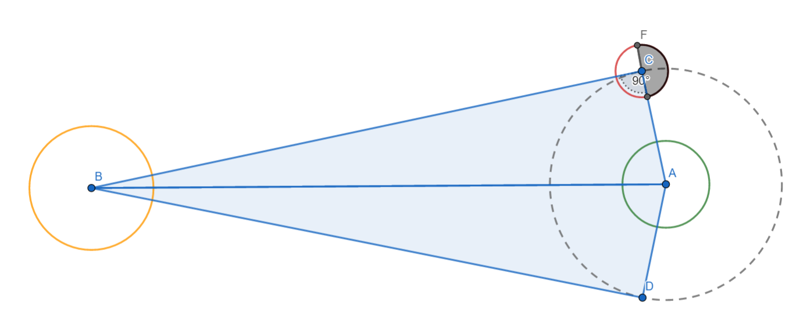

Man figuring out his place in the cosmos represents a stunning triumph of imagination and ingenuity. What the ancient Greeks were able to accomplish over 2000 years ago with nothing more than their mental acuity puts civilization’s stunning progress into perspective. How could we, the descendants of such brilliant ancestors, not go on and accomplish the remarkable things we have done. The apple doesn’t fall far from the tree.
In this blog post, I lay out these triumphs and will seek to explain how using only observations perceptible to the naked eye, clever geometry and a fertile imagination, the ancient Greeks unlocked the door to understanding our place in the cosmos.
Size of the Earth
The journey starts with Eratosthenes of Cyene, a Greek scholar born in 276 BC. In order to fulfill his ambition of making a map of the entire world, he realized he needed to measure the circumference of the earth.
Based in Alexandria, he heard from travelers that the sun illuminated the entire bottom of the well in Syene(now Aswan, Egypt), without casting shadows at noon on the summer solstice,indicating that the sun was directly overhead. We moderns now know that Syene lies on the Tropic of Cancer (\(23.5\circ\)), and the sun appears directly overhead on Summer Solstice that typically falls on June 21 as shown below.

Figure 1: Summer Solistice
He then measured the angle of the shadow cast by a stick at noon on the summer solstice in Alexandria and found it made an angle of 7.2 degrees (\(\theta\) in the figure below). Note that Eratosthenes deduced this angle using a form of trigonometry as modern trigonometry had not been invented yet.
Now, all that needed to be done was measure the distance from Alexandria to Syene (\(\textbf{BI}\) in the figure below)and the problem becomes one that can be solved by simple geometry as shown below.

Figure 2: Measuring the circumference of the earth
Given the arc \(\textbf{BI}\) subtends an angle \(\theta\) and the circumference of the circle \(\textbf{C}\) subtends an angle \(360\circ\) at the center, the circumference of the circle \(\textbf{C}\)
\[ \textbf{C} = \frac{360 \times BI}{\theta} \]
Eratosthenes hired professional surveyors to measure the distance between the two cities by walking equal length steps. They found this distance to be 5,000 stadia which is approximately 794 km. Using the formula above he determined the circumference of the earth to be about 250,000 stadia ,approximately 39,700 km. This is remarkably close to the modern estimate of 40,000 km.
Size of the Moon
Aristarchus of Samos measured the size of the moon by making observations about the shadow cast by the earth during the lunar eclipse (shown below)

Figure 3: Lunar Eclipse
Aristarchus knew this happened on average twice a year and realized that the angular size of the shadow cast by the earth at a distance to the moon (The angle \(\beta\) between the purple dashed lines) can be measured by noting the difference in the position of the moon before and after the eclipse as shown below. Note the two positions of the green circle representing the moon before and after the eclipse.
The angular size of the moon (The angle \(\alpha\) between the red dotted lines) could be measured at any time and is approximately \(0.5\circ\).

Figure 4: Size of the Moon - 1
Aristarchus calculated the ratio between these two angular sizes
\[ \frac{\beta}{\alpha} = 2.7 \ \ \ \ \ \ Eq(1)\]
Before we proceed,it is helpful to know the Observer’s Triangle Relation

Figure 5: Observer’s Traingle Relation
In a nutshell this relation says the Diameter of a planet \(D\), the distance to the planet \(L\) from the observation point (B) and the angle subtended by the planet at the observer’s position \(\alpha\) are related as given by the following expression. You can see the derivation of this expression here.
\[ \frac{\alpha}{57.3} = \frac{D}{L} \]
This means, referring to Figure 4
\[ \frac{D_{moon}}{\alpha} = \frac{D_{earth\_shadow}}{\beta} = \frac{L}{57.3}\ \ \ \ \ \ Eq(2) \] where \(D\_{moon}\) is the diameter of the moon and \(D_{earth_shadow}\) is the diameter of the earth’s shadow at the distance to the moon (\(L\))
From the above expression it is clear that if two objects are at the same distance (L), their diameters should have the same ratio as their angular size.
\[ \frac{D_{moon}}{D_{earth\_shadow}} = \frac{\alpha}{\beta}\]
This meant that he just needed to estimate the diameter of the earth’s shadow at the distance to the moon to calculate the diameter of the moon. This again reduces to a geometry problem.

Figure 6: Size of the moon - 2
In the figure above, let A be the center of the sun, G the center of the earth and L the center of the moon as it revolves around the earth in what is assumed to be a perfect circle, represented by the dashed circle.
From the above figure, given AGF is a straight line
\[ \alpha1 + \beta1 + \gamma1 = 180^\circ \]
Also, given DGL is a triangle,
\[ \delta1 + \beta1 + \theta1 = 180^\circ \]
This implies that
\[ \alpha1 + \gamma1 = \delta1 + \theta1 \ \ \ \ \ \ Eq(3)\]
Also note that:
- \(\alpha1\) is half the angular size of the sun for an observer on earth
- \(\gamma1\) is half the angular size of the earth’s shadow at the distance to the moon for an observer on earth
- \(\theta1\) is half the angular size of the earth for an observer on the moon
- \(\delta1\) is half the angular size of the earth for an observer on the sun
Using the Observer’s Triangle Relation
- \(\frac{\gamma1}{57.3} = \frac{Radius\ of\ Earth\ shadow\ at\ distance\ to\ moon(R_{em})}{Distance\ to\ moon(L_{m})}\)
- \(\frac{\alpha1}{57.3} = \frac{Radius\ of\ Sun(R_s)}{Distance\ to\ sun(L_s)}\)
- \(\frac{\theta1}{57.3} = \frac{Radius\ of\ earth(R_e)}{Distance\ to\ moon(L_{m})}\)
- \(\frac{\delta1}{57.3} = \frac{Radius\ of\ earth(R_e)}{Distance\ to\ sun(L_s)}\)
Substituting these values in \(Eq(3)\) gives \[ \frac{R_s}{L_s} + \frac{R_{em}}{L_m} = \frac{R_e}{L_m} +\frac{R_e}{L_s} \ \ \ \ Eq(4) \]
Observations showed that the angular size of the sun and the moon are very similar, so \(\frac{R_s}{L_s} = \frac{R_m(Radius\ of\ Moon)}{L_m}\)
Replacing the first term in \(Eq(4)\) with this expression gives
\[\frac{R_m}{L_m} + \frac{R_{em}}{L_m} = \frac{R_e}{L_m} +\frac{R_e}{L_s} \]
Multiplying throughout by \(L_m\) gives
\[ R_m + R_{em} = R_e + R_e \times \frac{L_m}{L_s}\ \ \ \ \ Eq(5)\] Given the distance to the sun is much greater than the distance to the moon, Aristarchus concluded that he could ignore the last term giving the final expression
\[ R_{em} = R_{e} - R_{m} \]
Rearranging terms gives
\[ \frac{R_{em}}{R_m} = \frac{R_e}{R_m} - 1\ \ \ \ Eq(6) \]
Using \(Eq(1)\)and \(Eq(2)\)and the fact that radius is just half the diameter gives:
\[\frac{\beta}{\alpha} = \frac{D_{earth\ shadow}}{D_{moon}} = \frac{R_{em}}{R_{m}}= 2.7 \]
Substituting this in \(Eq(6)\)gives:
\[ \frac{R_e}{R_m} = 3.7 \]
The circumference of the earth had been established as approximately 39,700 km by Eratosthenes, the radius can be easily calculated from this : 6,318 km
The radius of the moon is then given by \[ \frac{R_e}{3.7} = \frac{6318}{3.7} = 1,707 kms \] This is remarkably close to the modern estimate of 1,736 km
Distance to the Moon
Having measured the size of the moon and the angular size of the moon, the ancient Greeks could now use the parallax method to determine the distance to the moon.
Consider an object JQ of size \(L\), which has an angular size of \(\alpha\)from the observation point \(I\). You want to measure the distance to this object.
You can construct a circle with center at \(I\)and passing through both ends of the object as shown below

Figure 7: The parallax method
If \(360^{\circ}\) corresponds to an arc length of \(2\pi r\)(the circumference of the circle), and the arc length \(L\)corresponds to the angle \(\alpha\)
\[ \alpha^{\circ}: L :: 360^{\circ} : 2\pi r\]
\(r\) is given by:
\[ r = \frac{360 L}{2 \pi \alpha} \]
If the object is really far away, the size of the object \(L\)will be roughly equal to the arc length of the circle, further the radius of the circle \(r\)is a rough approximation of the distance to the object.
We had seen earlier, that the angular size of the as observed moon from the earth (\(\alpha\))is roughly \(0.5^{\circ}\). Substituting these values in the above equation gives \(r = 114.59 \text{L}\)
The distance to the moon is roughly 115 times the diameter of the moon. i.e. \(115 \times 2 \times 1707 = 392,610 \text{kms}\)
This is close to the modern estimate of 384,400 km.
Note that according to certain sources, Aristarchus measured the angle \(\alpha\) as \(2^{\circ}\)and hence ended up under estimating this distance by a factor of 4
Distance to the Sun
Aristarchus again used intelligent geometry to estimate the distance to the sun,however his ingenuity would be handicapped by the lack of equipment to make accurate observations.
Consider the sun in yellow with center at B, earth in green with center at A and the moon in red with center at G.

Figure 8: Distance to the sun
Aristarchus realized that the sun , earth and moon \(\Delta BGA\) formed a right triangle when the moon is half illuminated by the sun as shown above.
\[ \angle BCA = 90^{\circ} \]
He estimated the angular distance between the sun and the moon as \(87^{\circ}\)
\[ \angle CAB = 87^{\circ} \]
Trigonometry tells us that \(\cos(87^\circ) = \frac{CA}{AB} = \frac{\text{Distance to the moon}}{\text{Distance to the sun}} \approx 0.05\)
Distance to the sun should be 20 times the distance to the moon (which he had already estimated.)
However he had estimated \(\angle CAB\) incorrectly without any modern telescopic equipment. Modern measurements tell us this angle is actually \(89.85^{\circ}\). Using this measurement, the distance to the sun is actually close to 382 times the distance to the moon, so he was off by a factor close to 20.
Conclusion
After these discoveries, more than 1500 years would go by before Copernicus and Galileo would transform our understanding of our solar system. Although we take scientific progress granted today, this shows that our civilization is fragile and progress is not a foregone conclusion.
Our understanding of our place in the cosmos has evolved rapidly over the last two hundred years. The invention of the spectrograph by Fraunhofer in 1814 has allowed us to infer the properties,distance and mass of even distant stars by analyzing the light they emit.
In the space of a few hundred years, we have gone from thinking the solar system was all of the cosmos to realizing as Carl Sagan succinctly put it
“We live on a hunk of rock and metal that circles a humdrum star that is one of 400 billion other stars that make up the Milky Way Galaxy, which is one of billions of other galaxies which make up a universe which may be one of a very large number, perhaps an infinite number, of other universes.”
Our ancestors would be truly proud.
References
- https://www.amazon.com/Our-Mathematical-Universe-Ultimate-Reality/dp/0307599809
- https://www.aps.org/publications/apsnews/200606/history.cfm
- https://www.youtube.com/watch?v=O6KOSvYHAmA
- http://www.eg.bucknell.edu/physics/astronomy/astr101/specials/aristarchus.html
- http://www.phy6.org/stargaze/Sparalax.htm
- https://pwg.gsfc.nasa.gov/stargaze/Shipprc2.htm